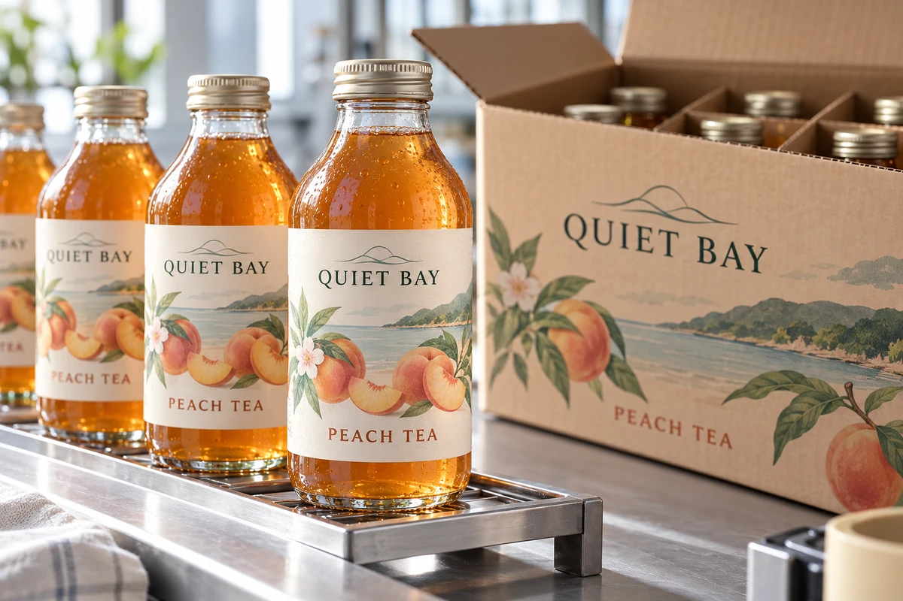

The label looks secure as it leaves the applicator. Minutes later the bottle is chilled, packed tightly or handled by another machine. A trial inspected only at the end of the day may miss the period when the label first meets those downstream conditions.
Review the time between application and each subsequent event. Ask the material supplier and process owner what the proposed construction needs under the actual conditions, then validate the relevant sequence. Do not turn a general dwell-time recommendation into one universal waiting period for every package.

Separate immediate hold from later adhesion
Avery Dennison's adhesive glossary distinguishes initial tack from ultimate adhesion and explains that development of the bond depends on conditions. That distinction matters when a packing process exposes a label before its later inspection point.
The question is operational: what must the newly applied label tolerate, and when? An immediate guide-rail contact, a later cold room and consumer use days afterward are different events. A successful observation at one stage does not automatically answer the others.
This article does not recommend a specific dwell duration. Use product-specific information and a relevant trial. The exact construction, container surface, application method and temperature all need to be identified before a timing decision can be meaningful.
Draw the downstream timeline
Start at the point of label contact. Record the application temperature and surface state, then the time and conditions at the next handling steps. Include accumulation, coding, cartoning, chilling, freezing, washing or other events that actually occur in your process.
Measure or obtain the normal and limiting timings from the line owner. Do not replace them with an office estimate when the decision depends on a short interval. If the process varies during stops or restarts, preserve that variation for review.
The application-versus-service temperature guide separates two temperature questions. The timeline adds the transition between them, which can be lost when an RFQ lists only the final storage temperature.
Use a post-application release record
| Event | Timing and condition | Observation or decision |
|---|---|---|
| Label application | Actual surface, temperature and method | Initial placement and contact |
| First machine contact | Time to guide, belt or another contact | Relevant movement or edge observation |
| Case packing | Interval, contact and pack arrangement | Appearance and handling result |
| Temperature change | Interval and actual transition | Condition after the specified sequence |
| Later inspection | Agreed time and viewing method | Accepted, held or further evaluation |
| Process exception | Stop, restart or changed route | Whether previous evidence still applies |
This is a trial-planning asset. The quality and engineering owners should decide the observation method and acceptance basis. Do not treat every visible difference as a failure without an agreed criterion, or every attached label as a complete pass.
Test the sequence rather than an isolated waiting time
Use the intended container and construction. Apply labels by a method representing the process being evaluated. If hand-applied samples are used for early investigation, state that limitation instead of calling them a completed automatic-line qualification.
Observe at the points relevant to the downstream decision. A label that remains acceptable after a long quiet wait may still need evaluation when packed immediately. Conversely, an early observation should not automatically define long-term performance.
Keep an identifiable reference and record the events actually completed. If chilling was delayed during the trial, the result does not represent a process that chills immediately. A change in the timeline is a change in the tested condition, even when the materials are unchanged.
Compare the available process choices
Possible responses include a different construction, a controlled staging interval or a revised order of operations. Ask which choices the supplier and line owner can support. Adding a buffer may consume floor space and work-in-progress capacity; changing construction may add qualification or purchasing complexity.
A hypothetical tea-bottle line might evaluate a longer interval before a particular packing contact. Another operation may have no practical buffer and need a construction suited to its existing route. Neither example establishes that waiting is always the right fix.
The condensation guide addresses cold glass and moisture. Keep the timing evidence separate from a claim that condensation caused a particular failure; several process differences may need investigation.
Include stops and restarts in the release boundary
An uninterrupted trial can leave gaps if normal operations include accumulation or extended stops. Ask which exceptions could change package condition or handling and how the team will control them. Do not invent a worst-case condition that the line will never encounter, but do not omit a known routine event because it complicates the sample plan.
Record the approved operating boundary and the action when conditions move outside it. A timed hold instruction needs an owner and a practical way to identify material still waiting. Otherwise, the interval exists only in a document.
Use an unambiguous timing origin
Define the start of each interval in the trial sheet. Time from the first contact of a particular label is different from time since the batch began or since a carton was completed. When the inspection result depends on that distinction, the line owner should specify a practical identification and timing method. Record what was actually measured rather than assign every pack the same nominal dwell.
Reopen the decision when the route changes
A new packing station, faster line, different storage sequence or replacement adhesive can affect the relevance of earlier observations. Compare the changed event with the timeline before reusing the approval. The peeling investigation guide helps frame observations without assuming a technical cause.
Send a post-labeling process brief with the container, construction reference, application conditions and time to each downstream event. Identify the first condition the label must tolerate and the evidence already available. The form opens an email draft; review it and attach the timeline through email or the listed WhatsApp route.